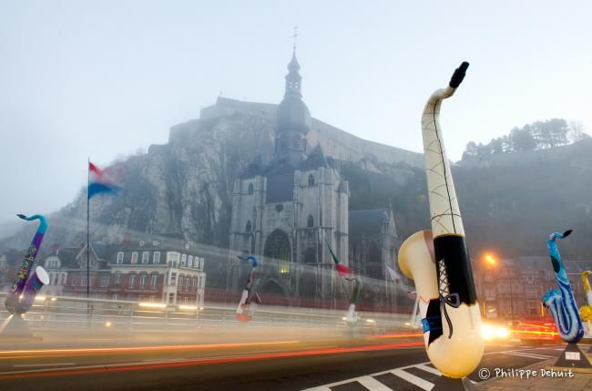
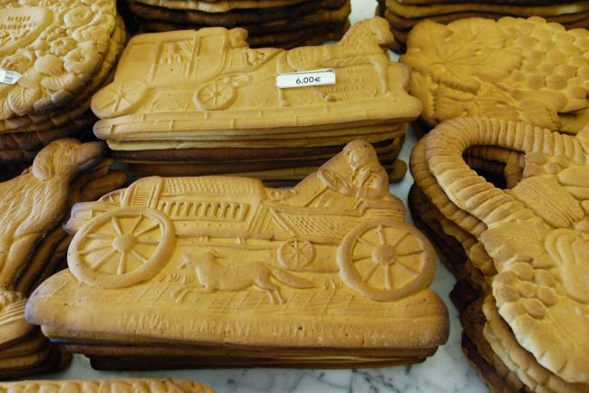

De citadel
Honderd meter boven de stad, zeventien keer belegerd. De kabelbaan brengt je naar boven — de 408 oude trappen zijn de mooiere route.
Hoge herenhuizen, een nog hogere kerk, rotswanden en daarbovenop de citadel — weinig plaatsen in de Ardennen hebben zo'n herkenbaar silhouet als Dinant, de geboortestad van Adolphe Sax.
Niet te missen
Honderd meter boven de stad, zeventien keer belegerd. De kabelbaan brengt je naar boven — de 408 oude trappen zijn de mooiere route.

Adolphe Sax werd hier in 1814 geboren. Op de plek van zijn geboortehuis vertelt La Maison de Monsieur Sax zijn verhaal; op de Maasbrug staan zijn saxofoons in het gelid.

Een boottocht over de Maas, of een kajaktocht op de Lesse langs kasteel Walzin — Dinant beleef je vanaf het water.

De couque — een harde koek van tarwe en honing — en een glas Leffe, het bier van de stad: de dag bekroon je op een kade-terras.

Rond Dinant is de vallei op haar indrukwekkendst: forten, kastelen en steile rotswanden die geliefd zijn bij klimmers.
Wat te doen


Het ondergrondse wonder van de Lessevallei, op een halfuurtje van de Maas.

Praktisch
Dinant is klein maar wordt vaak tot de mooiste steden van België gerekend — dankzij de ligging tussen Maas en rotswand. Citadel, Maison de Monsieur Sax, een boottocht en een terras op de kade vullen makkelijk een dag.
Met de kabelbaan vanaf de Maaskade, of te voet via de 408 historische trappen. Boven kijk je honderd meter uit over stad en rivier.
In de zomer is de stad op haar levendigst, met boottochten en terrassen. Het voor- en najaar zijn rustiger; in december kleurt ook Dinant in kerstsfeer, met kraampjes langs het water.
Marktdagen en parkeerinfo worden in de definitieve pagina aangevuld door de redactie van VisitArdenne.

Blijven slapen
Van een kade-hotel tot een cabane in de bossen boven de Maas: wij tonen de plekken, je boekt rechtstreeks bij de gastheer of -vrouw.